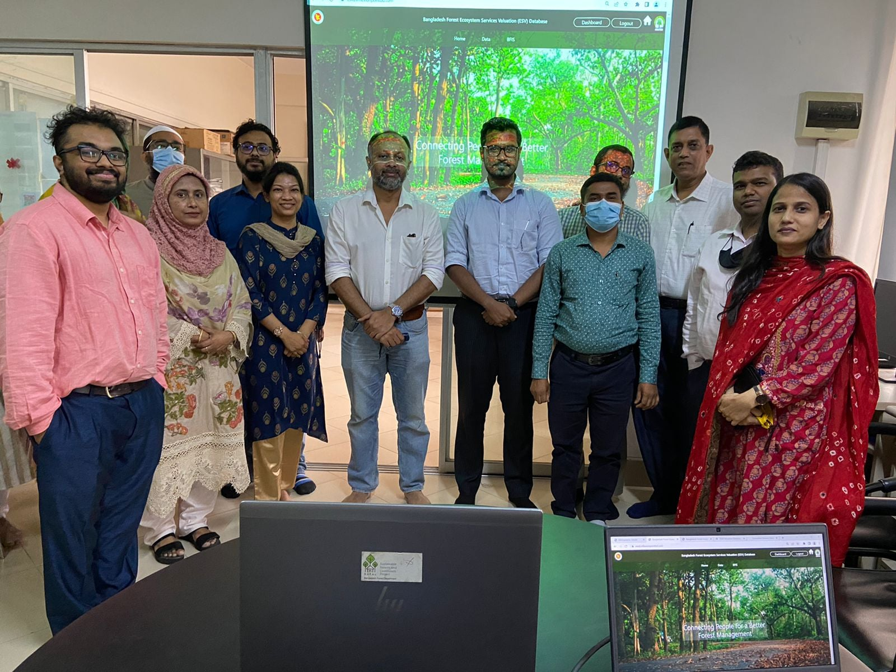

Project Contributions
I always try my level best to implement my knowledge and skills that I have garnered so that those become permanent to my skillsets. My portfolio of works is being featured here.
Bangladesh Forest Ecosystem Services Valuation (ESV)
https://bfis.bforest.gov.bd/esvd/public/Project Role : Lead Software Developer
The Ecosystem Services Valuation Database (ESVD) has been
developed with the long-term goal of providing robust and easily
accessible information on the economic benefits of ecosystems and
biodiversity, and the costs of their loss, to support
decision-making regarding nature conservation, ecosystem
restoration, and sustainable land management.
The focus of the ESVD is to gather information on economic welfare
values related to ecosystem services measured in monetary units.
By communicating such values in monetary units, we provide
recognizable information that can be used to internalize the
importance of Nature in decision making.
As a Lead Software Developer at Inflexionpoint Technologies (BD)
limited, I had the opportunity to work as a Lead Software
Developer and project coordinator for this government project. It
has given me a great opportunity to garner valuable experience and
also, it has opened a gateway for me to learn more.

This project serves the purpose of developing valuable human
resources in Bangladesh by providing a one-way travel grant to
Bangladeshi students studying abroad.
As a lead software developer and project coordinator at
Inflexionpoint Technologies (BD) limited, I had the opportunity to
work as a project coordinator for this government project. It has
given me a great opportunity to garner valuable experience and
also, it has opened a gateway for me to learn more.
InsureCow offers a 360° technology-powered cattle insurance and
wellbeing monitoring platform. Our solutions create a digital and
robust bridge between farmers, SMEs, NGOs, Insurers, and financial
institutions.
Insurecow ensures a sustainable and resilient agrarian future for
our nation by increasing the farmers’ access to finance,
technology & information, which inevitably leads to their
financial security.
The product accomplishes it's goals by letting the farmers, NGOs
and other financial institutions register their cattle for
insurance via our online portal, who are then able to visualize
their policy progression in our state-of-the-art Analytics Hub.
And through our Payment Gateway System, it is now easier than ever
for premiums to be paid and insurance to be claimed.
Arannayk Foundation, also known as the Bangladesh Tropical Forest Conservation Foundation, is a not-for-profit organization established in 2003 by the joint initiative of the Governments of the People's Republic of Bangladesh and the United States of America. Arannayk Foundation is registered as a not-for-profit company limited by guarantee (Reg. No.C-550 (02)/2003) and not having a share capital under section 28 of the Bangladesh Companies Act 1994.
Arannayk Foundation promotes conservation, protection, restoration and sustainable use of tropical forests in Bangladesh. It provides financial and technical assistance to organizations involved in forests and biodiversity conservation. It also implements projects financed by the other development partners.
SouthPoint BD - Overseas Training Center
https://southpointbd.com/Project Role : Lead Software Developer
South Point Overseas Ltd. established an Overseas Training Centre (OTC) under the name of ‘Singapore Engineering & Construction - South Point Skills Centre’ located at Ashulia, 12 km North-West of Hazrat Shahjalal Intl. Airport stretching over a landscape of more than 9 acres with a covered space exceeding 2,00,000 sft. Singapore Engineering & Construction - South Point Skills Centre is currently the largest Training & Test Centre in Bangladesh.
Within two decades of operations, South Point Overseas Ltd. has successfully despatched exactly 20,379 workers to Singapore alone as on the last date of December, 2021. Details are as under:Bangladesh with a teeming population of approximately 180 million people is mostly dependent on her inbound Remittances, now boasting of a whopping 25 Billion Dollars per annum
The chief commodities of export include Jute, Tea, Ceramics, Leather Products, Garments and profoundly the export of Manpower and this valiant sector injects or contributes a healthy ratio of 9% of our total GDP directly, the core of our National Exchequer
The library "Nizam and Books" is associated with the "Anandalok" school with the primary objective of preserving the memory of Mr. Nizam, the first principal of Anandalok, who passed away suddenly. Mr. Nizam was a revolutionary individual who believed in encouraging children to read books. In today's context, promoting and sustaining the habit of reading books in society, particularly among children, is essential. The library aims to commemorate Mr. Nizam's memory and instill the habit of reading books among children and adults in the Anandalok school community. The goal of the "Nizam and Books" library is to spread the joy of reading and knowledge through books to everyone.

A simple and secure attendance system that uses fingerprints to easily keep track of who's present.